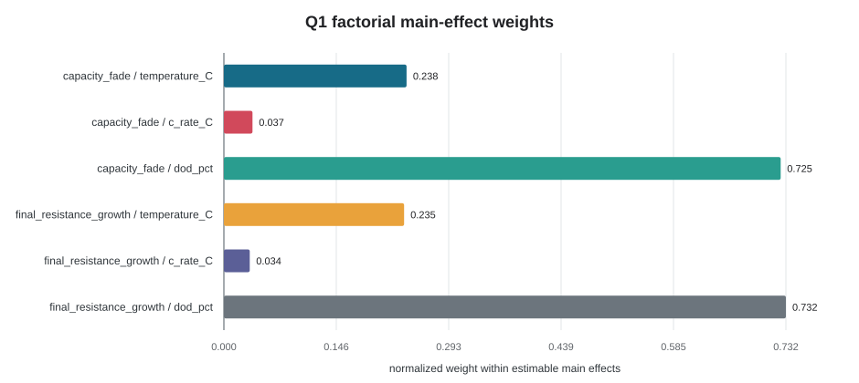
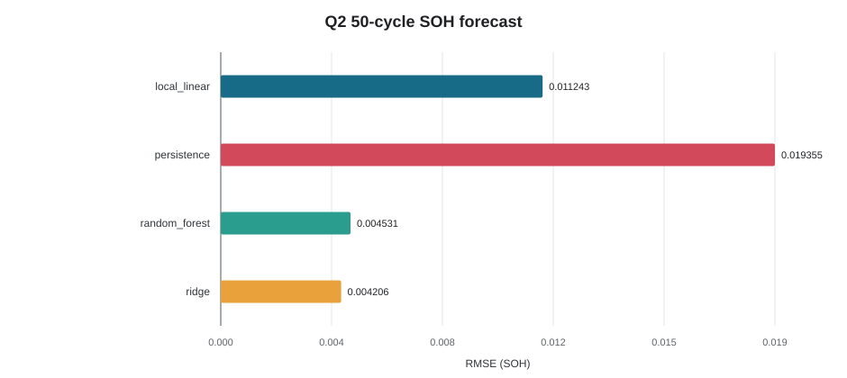
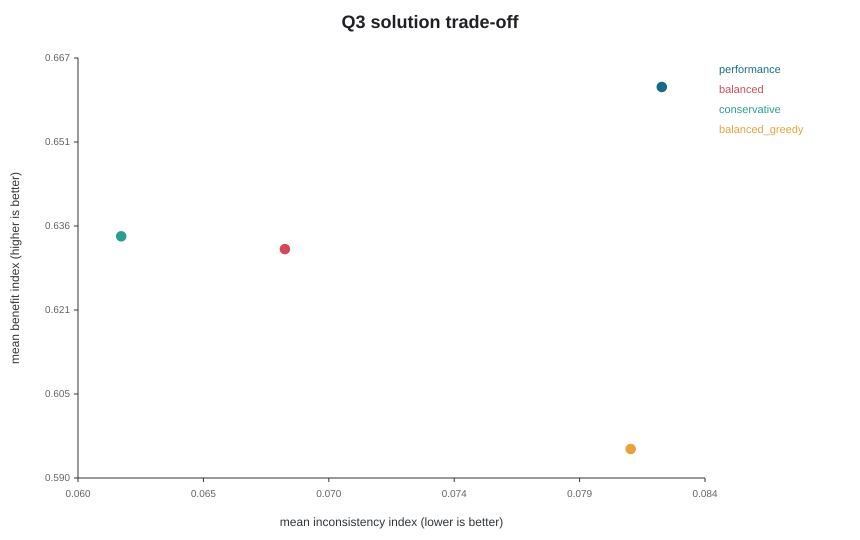
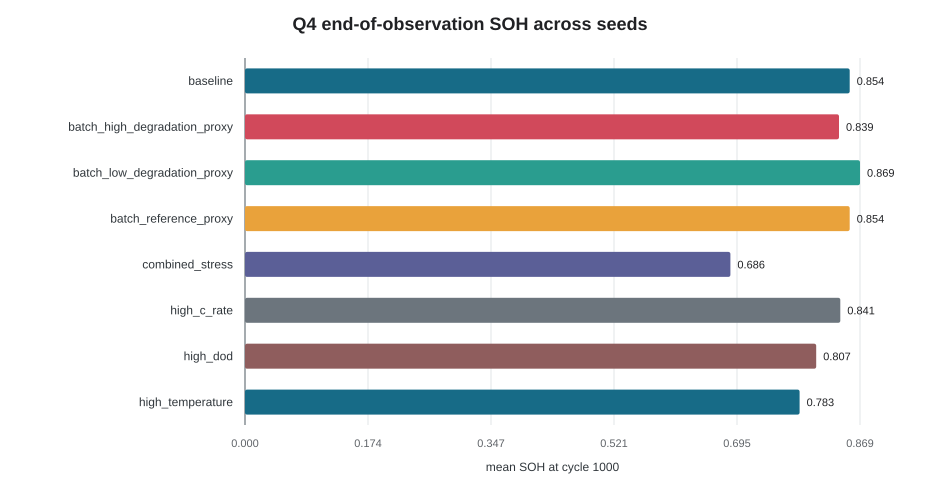

关键结果
0.004206最佳通用 SOH RMSE · ridge
38.39AFT RUL RMSE · 仅 43 个可观测事件
85/108Q3 通过假设硬门槛
0MILP 重复电芯分配
证据边界
[ASSUMED/UPDATEABLE] 退化参数、80% SOH、筛选门槛、批次代理和经济权重均待真实数据更新。
[OOD/ABSTAIN] 低温、过充、过放和超过 2C 不输出数值。
多工况摘要
| 场景 | 平均末期 SOH | 临界比例 | 筛选率 |
|---|---|---|---|
| baseline | 0.8541 | 0.0000 | 1.0000 |
| batch_high_degradation_proxy | 0.8391 | 0.0000 | 1.0000 |
| batch_low_degradation_proxy | 0.8687 | 0.0000 | 1.0000 |
| batch_reference_proxy | 0.8541 | 0.0000 | 1.0000 |
| combined_stress | 0.6857 | 1.0000 | 0.0000 |
| high_c_rate | 0.8409 | 0.0000 | 1.0000 |
| high_dod | 0.8069 | 0.1917 | 1.0000 |
| high_temperature | 0.7833 | 0.9667 | 0.9167 |
论文图候选



